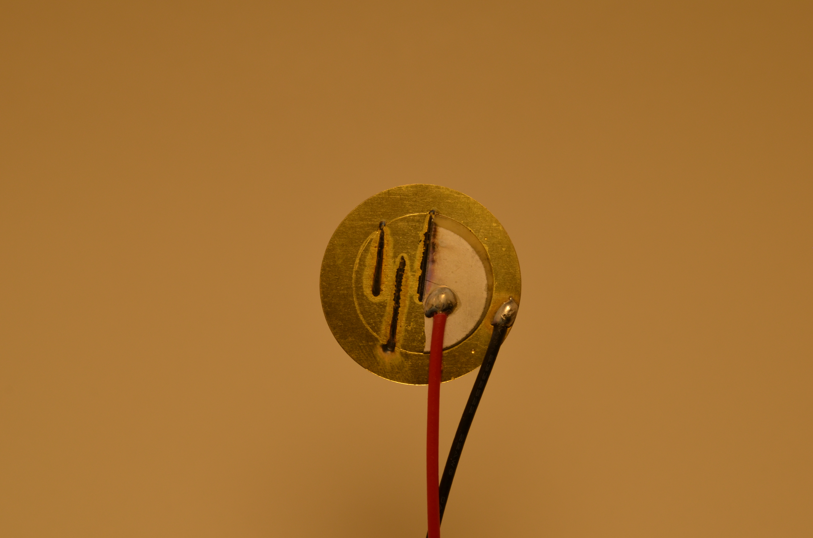
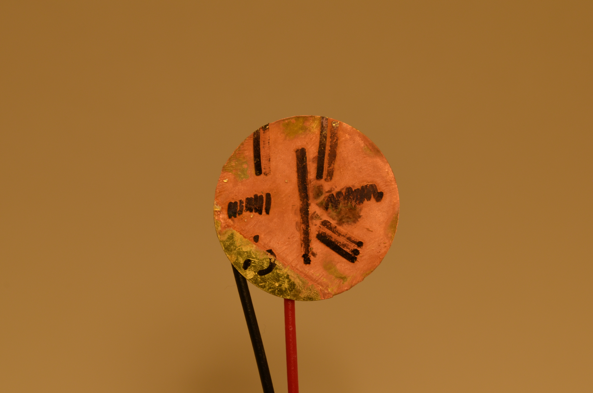

I was curious if I could change how piezo discs would deform when voltage was applied by laser cutting patterns into them. Unfortunately the heat destroyed them completely. Maybe with a better laser cutter there's something to this idea? Or modifications could be done with masking and some sort of chemical bath.
